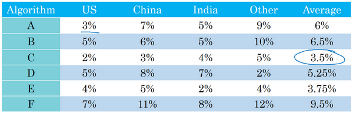
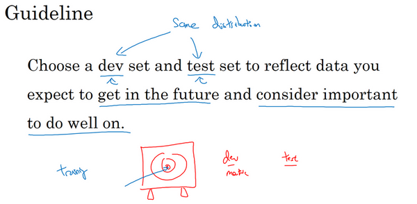
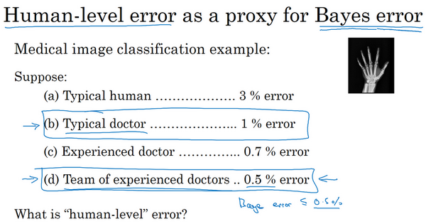

第三门课 结构化机器学习项目（Structuring Machine Learning Projects）¶
第一周 机器学习（ML）策略（1）（ML strategy（1））¶
1.1 为什么是ML策略？（Why ML Strategy?）¶
大家好，欢迎收听本课，如何构建你的机器学习项目也就是说机器学习的策略。我希望通过这门课程你们能够学到如何更快速高效地优化你的机器学习系统。那么，什么是机器学习策略呢？

我们从一个启发性的例子开始讲，假设你正在调试你的猫分类器，经过一段时间的调整，你的系统达到了90%准确率，但对你的应用程序来说还不够好。
你可能有很多想法去改善你的系统，比如，你可能想我们去收集更多的训练数据吧。或者你会说，可能你的训练集的多样性还不够，你应该收集更多不同姿势的猫咪图片，或者更多样化的反例集。或者你想再用梯度下降训练算法，训练久一点。或者你想尝试用一个完全不同的优化算法，比如Adam优化算法。或者尝试使用规模更大或者更小的神经网络。或者你想试试dropout或者\(L2\)正则化。或者你想修改网络的架构，比如修改激活函数，改变隐藏单元的数目之类的方法。
当你尝试优化一个深度学习系统时，你通常可以有很多想法可以去试，问题在于，如果你做出了错误的选择，你完全有可能白费6个月的时间，往错误的方向前进，在6个月之后才意识到这方法根本不管用。比如，我见过一些团队花了6个月时间收集更多数据，却在6个月之后发现，这些数据几乎没有改善他们系统的性能。所以，假设你的项目没有6个月的时间可以浪费，如果有快速有效的方法能够判断哪些想法是靠谱的，或者甚至提出新的想法，判断哪些是值得一试的想法，哪些是可以放心舍弃的。
我希望在这门课程中，可以教给你们一些策略，一些分析机器学习问题的方法，可以指引你们朝着最有希望的方向前进。这门课中，我会和你们分享我在搭建和部署大量深度学习产品时学到的经验和教训，我想这些内容是这门课程独有的。比如说，很多大学深度学习课程很少提到这些策略。事实上，机器学习策略在深度学习的时代也在变化，因为现在对于深度学习算法来说能够做到的事情，比上一代机器学习算法大不一样。我希望这些策略能帮助你们提高效率，让你们的深度学习系统更快投入实用。
1.2 正交化（Orthogonalization）¶
搭建建立机器学习系统的挑战之一是，你可以尝试和改变的东西太多太多了。包括，比如说，有那么多的超参数可以调。我留意到，那些效率很高的机器学习专家有个特点，他们思维清晰，对于要调整什么来达到某个效果，非常清楚，这个步骤我们称之为正交化，让我告诉你是什么意思吧。

这是一张老式电视图片，有很多旋钮可以用来调整图像的各种性质，所以对于这些旧式电视，可能有一个旋钮用来调图像垂直方向的高度，另外有一个旋钮用来调图像宽度，也许还有一个旋钮用来调梯形角度，还有一个旋钮用来调整图像左右偏移，还有一个旋钮用来调图像旋转角度之类的。电视设计师花了大量时间设计电路，那时通常都是模拟电路来确保每个旋钮都有相对明确的功能。如一个旋钮来调整这个（高度），一个旋钮调整这个（宽度），一个旋钮调整这个（梯形角度），以此类推。
相比之下，想象一下，如果你有一个旋钮调的是\(0.1x\)表示图像高度，\(+0.3x\)表示图像宽度，\(-1.7x\)表示梯形角度，\(+0.8x\)表示图像在水平轴上的坐标之类的。如果你调整这个（其中一个）旋钮，那么图像的高度、宽度、梯形角度、平移位置全部都会同时改变，如果你有这样的旋钮，那几乎不可能把电视调好，让图像显示在区域正中。
所以在这种情况下，正交化指的是电视设计师设计这样的旋钮，使得每个旋钮都只调整一个性质，这样调整电视图像就容易得多，就可以把图像调到正中。
接下来是另一个正交化例子，你想想学车的时候，一辆车有三个主要控制，第一是方向盘，方向盘决定你往左右偏多少，还有油门和刹车。就是这三个控制，其中一个控制方向，另外两个控制你的速度，这样就比较容易解读。知道不同控制的不同动作会对车子运动有什么影响。

想象一下，如果有人这么造车，造了个游戏手柄，手柄的一个轴控制的是\(0.3×\)转向角-速度，然后还有一个轴控制的是\(2×\)转向角\(+0.9×\)车速，理论上来说，通过调整这两个旋钮你是可以将车子调整到你希望得到的角度和速度，但这样比单独控制转向角度，分开独立的速度控制要难得多。
所以正交化的概念是指，你可以想出一个维度，这个维度你想做的是控制转向角，还有另一个维度来控制你的速度，那么你就需要一个旋钮尽量只控制转向角，另一个旋钮，在这个开车的例子里其实是油门和刹车控制了你的速度。但如果你有一个控制旋钮将两者混在一起，比如说这样一个控制装置同时影响你的转向角和速度，同时改变了两个性质，那么就很难令你的车子以想要的速度和角度前进。然而正交化之后，正交意味着互成90度。设计出正交化的控制装置，最理想的情况是和你实际想控制的性质一致，这样你调整参数时就容易得多。可以单独调整转向角，还有你的油门和刹车，令车子以你想要的方式运动。
那么这与机器学习有什么关系呢？要弄好一个监督学习系统，你通常需要调你的系统的旋钮。
确保四件事情，首先，你通常必须确保至少系统在训练集上得到的结果不错，所以训练集上的表现必须通过某种评估，达到能接受的程度，对于某些应用，这可能意味着达到人类水平的表现，但这取决于你的应用，我们将在下周更多地谈谈如何与人类水平的表现进行比较。但是，在训练集上表现不错之后，你就希望系统也能在开发集上有好的表现，然后你希望系统在测试集上也有好的表现。在最后，你希望系统在测试集上系统的成本函数在实际使用中表现令人满意，比如说，你希望这些猫图片应用的用户满意。

我们回到电视调节的例子，如果你的电视图像太宽或太窄，你想要一个旋钮去调整，你可不想要仔细调节五个不同的旋钮，它们也会影响别的图像性质，你只需要一个旋钮去改变电视图像的宽度。
所以类似地，如果你的算法在成本函数上不能很好地拟合训练集，你想要一个旋钮，是的我画这东西表示旋钮，或者一组特定的旋钮，这样你可以用来确保你的可以调整你的算法，让它很好地拟合训练集，所以你用来调试的旋钮是你可能可以训练更大的网络，或者可以切换到更好的优化算法，比如Adam优化算法，等等。我们将在本周和下周讨论一些其他选项。
相比之下，如果发现算法对开发集的拟合很差，那么应该有独立的一组旋钮，是的，这就是我画得毛毛躁躁的另一个旋钮，你希望有一组独立的旋钮去调试。比如说，你的算法在开发集上做的不好，它在训练集上做得很好，但开发集不行，然后你有一组正则化的旋钮可以调节，尝试让系统满足第二个条件。类比到电视，就是现在你调好了电视的宽度，如果图像的高度不太对，你就需要一个不同的旋钮来调节电视图像的高度，然后你希望这个旋钮尽量不会影响到电视的宽度。增大训练集可以是另一个可用的旋钮，它可以帮助你的学习算法更好地归纳开发集的规律，现在调好了电视图像的高度和宽度。
如果它不符合第三个标准呢？如果系统在开发集上做的很好，但测试集上做得不好呢？如果是这样，那么你需要调的旋钮，可能是更大的开发集。因为如果它在开发集上做的不错，但测试集不行这可能意味着你对开发集过拟合了，你需要往回退一步，使用更大的开发集。
最后，如果它在测试集上做得很好，但无法给你的猫图片应用用户提供良好的体验，这意味着你需要回去，改变开发集或成本函数。因为如果根据某个成本函数，系统在测试集上做的很好，但它无法反映你的算法在现实世界中的表现，这意味着要么你的开发集分布设置不正确，要么你的成本函数测量的指标不对。
我们很快会逐一讲到这些例子，我们以后会详细介绍这些特定的旋钮，在本周和下周晚些时候会介绍的。所以如果现在你无法理解全部细节，别担心，但我希望你们对这种正交化过程有个概念。你要非常清楚，到底是四个问题中的哪一个，知道你可以调节哪些不同的东西尝试解决那个问题。

当我训练神经网络时，我一般不用early stopping，这个技巧也还不错，很多人都这么干。但个人而言，我觉得用early stopping有点难以分析，因为这个旋钮会同时影响你对训练集的拟合，因为如果你早期停止，那么对训练集的拟合就不太好，但它同时也用来改善开发集的表现，所以这个旋钮没那么正交化。因为它同时影响两件事情，就像一个旋钮同时影响电视图像的宽度和高度。不是说这样就不要用，如果你想用也是可以的。但如果你有更多的正交化控制，比如我这里写出的其他手段，用这些手段调网络会简单不少。
所以我希望你们对正交化的意义有点概念，就像你看电视图像一样。如果你说，我的电视图像太宽，所以我要调整这个旋钮（宽度旋钮）。或者它太高了，所以我要调整那个旋钮（高度旋钮）。或者它太梯形了，所以我要调整这个旋钮（梯形角度旋钮），这就很好。
在机器学习中，如果你可以观察你的系统，然后说这一部分是错的，它在训练集上做的不好、在开发集上做的不好、它在测试集上做的不好，或者它在测试集上做的不错，但在现实世界中不好，这就很好。必须弄清楚到底是什么地方出问题了，然后我们刚好有对应的旋钮，或者一组对应的旋钮，刚好可以解决那个问题，那个限制了机器学习系统性能的问题。
这就是我们这周和下周要讲到的，如何诊断出系统性能瓶颈到底在哪。还有找到你可以用的一组特定的旋钮来调整你的系统，来改善它特定方面的性能，我们开始详细讲讲这个过程吧。
1.3 单一数字评估指标（Single number evaluation metric）¶
无论你是调整超参数，或者是尝试不同的学习算法，或者在搭建机器学习系统时尝试不同手段，你会发现，如果你有一个单实数评估指标，你的进展会快得多，它可以快速告诉你，新尝试的手段比之前的手段好还是差。所以当团队开始进行机器学习项目时，我经常推荐他们为问题设置一个单实数评估指标。

我们来看一个例子，你之前听过我说过，应用机器学习是一个非常经验性的过程，我们通常有一个想法，编程序，跑实验，看看效果如何，然后使用这些实验结果来改善你的想法，然后继续走这个循环，不断改进你的算法。
比如说对于你的猫分类器，之前你搭建了某个分类器\(A\)，通过改变超参数，还有改变训练集等手段，你现在训练出来了一个新的分类器B，所以评估你的分类器的一个合理方式是观察它的查准率（precision）和查全率（recall）。

查准率和查全率的确切细节对于这个例子来说不太重要。但简而言之，查准率的定义是在你的分类器标记为猫的例子中，有多少真的是猫。所以如果分类器\(A\)有95%的查准率，这意味着你的分类器说这图有猫的时候，有95%的机会真的是猫。
查全率就是，对于所有真猫的图片，你的分类器正确识别出了多少百分比。实际为猫的图片中，有多少被系统识别出来？如果分类器\(A\)查全率是90%，这意味着对于所有的图像，比如说你的开发集都是真的猫图，分类器\(A\)准确地分辨出了其中的90%。
所以关于查准率和查全率的定义，不用想太多。事实证明，查准率和查全率之间往往需要折衷，两个指标都要顾及到。你希望得到的效果是，当你的分类器说某个东西是猫的时候，有很大的机会它真的是一只猫，但对于所有是猫的图片，你也希望系统能够将大部分分类为猫，所以用查准率和查全率来评估分类器是比较合理的。
但使用查准率和查全率作为评估指标的时候，有个问题，如果分类器\(A\)在查全率上表现更好，分类器\(B\)在查准率上表现更好，你就无法判断哪个分类器更好。如果你尝试了很多不同想法，很多不同的超参数，你希望能够快速试验不仅仅是两个分类器，也许是十几个分类器，快速选出“最好的”那个，这样你可以从那里出发再迭代。如果有两个评估指标，就很难去快速地二中选一或者十中选一，所以我并不推荐使用两个评估指标，查准率和查全率来选择一个分类器。你只需要找到一个新的评估指标，能够结合查准率和查全率。

在机器学习文献中，结合查准率和查全率的标准方法是所谓的\(F_1\)分数，\(F_1\)分数的细节并不重要。但非正式的，你可以认为这是查准率\(P\)和查全率\(R\)的平均值。正式来看，\(F_1\)分数的定义是这个公式：\(\frac{2}{\frac{1}{P} + \frac{1}{R}}\)
在数学中，这个函数叫做查准率\(P\)和查全率\(R\)的调和平均数。但非正式来说，你可以将它看成是某种查准率和查全率的平均值，只不过你算的不是直接的算术平均，而是用这个公式定义的调和平均。这个指标在权衡查准率和查全率时有一些优势。

但在这个例子中，你可以马上看出，分类器\(A\)的\(F_1\)分数更高。假设\(F_1\)分数是结合查准率和查全率的合理方式，你可以快速选出分类器\(A\)，淘汰分类器\(B\)。

我发现很多机器学习团队就是这样，有一个定义明确的开发集用来测量查准率和查全率，再加上这样一个单一数值评估指标，有时我叫单实数评估指标，能让你快速判断分类器\(A\)或者分类器\(B\)更好。所以有这样一个开发集，加上单实数评估指标，你的迭代速度肯定会很快，它可以加速改进您的机器学习算法的迭代过程。

我们来看另一个例子，假设你在开发一个猫应用来服务四个地理大区的爱猫人士，美国、中国、印度还有世界其他地区。我们假设你的两个分类器在来自四个地理大区的数据中得到了不同的错误率，比如算法\(A\)在美国用户上传的图片中达到了3%错误率，等等。
所以跟踪一下，你的分类器在不同市场和地理大区中的表现应该是有用的，但是通过跟踪四个数字，很难扫一眼这些数值就快速判断算法\(A\)或算法\(B\)哪个更好。如果你测试很多不同的分类器，那么看着那么多数字，然后快速选一个最优是很难的。所以在这个例子中，我建议，除了跟踪分类器在四个不同的地理大区的表现，也要算算平均值。假设平均表现是一个合理的单实数评估指标，通过计算平均值，你就可以快速判断。

看起来算法\(C\)的平均错误率最低，然后你可以继续用那个算法。你必须选择一个算法，然后不断迭代，所以你的机器学习的工作流程往往是你有一个想法，你尝试实现它，看看这个想法好不好。
所以本视频介绍的是，有一个单实数评估指标真的可以提高你的效率，或者提高你的团队做出这些决策的效率。现在我们还没有完整讨论如何有效地建立评估指标。在下一个视频中，我会教你们如何设置优化以及满足指标，我们来看下一段视频。
1.4 满足和优化指标（Satisficing and optimizing metrics）¶
要把你顾及到的所有事情组合成单实数评估指标有时并不容易，在那些情况里，我发现有时候设立满足和优化指标是很重要的，让我告诉你是什么意思吧。

假设你已经决定你很看重猫分类器的分类准确度，这可以是\(F_1\)分数或者用其他衡量准确度的指标。但除了准确度之外，我们还需要考虑运行时间，就是需要多长时间来分类一张图。分类器\(A\)需要80毫秒，\(B\)需要95毫秒，\(C\)需要1500毫秒，就是说需要1.5秒来分类图像。

你可以这么做，将准确度和运行时间组合成一个整体评估指标。所以成本，比如说，总体成本是\(cost= accuracy - 0.5 \times\text{runningTime}\)，这种组合方式可能太刻意，只用这样的公式来组合准确度和运行时间，两个数值的线性加权求和。
你还可以做其他事情，就是你可能选择一个分类器，能够最大限度提高准确度，但必须满足运行时间要求，就是对图像进行分类所需的时间必须小于等于100毫秒。所以在这种情况下，我们就说准确度是一个优化指标，因为你想要准确度最大化，你想做的尽可能准确，但是运行时间就是我们所说的满足指标，意思是它必须足够好，它只需要小于100毫秒，达到之后，你不在乎这指标有多好，或者至少你不会那么在乎。所以这是一个相当合理的权衡方式，或者说将准确度和运行时间结合起来的方式。实际情况可能是，只要运行时间少于100毫秒，你的用户就不会在乎运行时间是100毫秒还是50毫秒，甚至更快。

通过定义优化和满足指标，就可以给你提供一个明确的方式，去选择“最好的”分类器。在这种情况下分类器B最好，因为在所有的运行时间都小于100毫秒的分类器中，它的准确度最好。
所以更一般地说，如果你要考虑\(N\)个指标，有时候选择其中一个指标做为优化指标是合理的。所以你想尽量优化那个指标，然后剩下\(N-1\)个指标都是满足指标，意味着只要它们达到一定阈值，例如运行时间快于100毫秒，但只要达到一定的阈值，你不在乎它超过那个门槛之后的表现，但它们必须达到这个门槛。

这里是另一个例子，假设你正在构建一个系统来检测唤醒语，也叫触发词，这指的是语音控制设备。比如亚马逊Echo，你会说“Alexa”，或者用“Okay Google”来唤醒谷歌设备，或者对于苹果设备，你会说“Hey Siri”，或者对于某些百度设备，我们用“你好百度”唤醒。
对的，这些就是唤醒词，可以唤醒这些语音控制设备，然后监听你想说的话。所以你可能会在乎触发字检测系统的准确性，所以当有人说出其中一个触发词时，有多大概率可以唤醒你的设备。
你可能也需要顾及假阳性（false positive）的数量，就是没有人在说这个触发词时，它被随机唤醒的概率有多大？所以这种情况下，组合这两种评估指标的合理方式可能是最大化精确度。所以当某人说出唤醒词时，你的设备被唤醒的概率最大化，然后必须满足24小时内最多只能有1次假阳性，对吧？所以你的设备平均每天只会没有人真的在说话时随机唤醒一次。所以在这种情况下，准确度是优化指标，然后每24小时发生一次假阳性是满足指标，你只要每24小时最多有一次假阳性就满足了。
总结一下，如果你需要顾及多个指标，比如说，有一个优化指标，你想尽可能优化的，然后还有一个或多个满足指标，需要满足的，需要达到一定的门槛。现在你就有一个全自动的方法，在观察多个成本大小时，选出"最好的"那个。现在这些评估指标必须是在训练集或开发集或测试集上计算或求出来的。所以你还需要做一件事，就是设立训练集、开发集，还有测试集。在下一个视频里，我想和大家分享一些如何设置训练、开发和测试集的指导方针，我们下一个视频继续。
1.5 训练/开发/测试集划分（Train/dev/test distributions）¶
设立训练集，开发集和测试集的方式大大影响了你或者你的团队在建立机器学习应用方面取得进展的速度。同样的团队，即使是大公司里的团队，在设立这些数据集的方式，真的会让团队的进展变慢而不是加快，我们看看应该如何设立这些数据集，让你的团队效率最大化。

在这个视频中，我想集中讨论如何设立开发集和测试集，开发（dev）集也叫做开发集（development set），有时称为保留交叉验证集（hold out cross validation set）。然后，机器学习中的工作流程是，你尝试很多思路，用训练集训练不同的模型，然后使用开发集来评估不同的思路，然后选择一个，然后不断迭代去改善开发集的性能，直到最后你可以得到一个令你满意的成本，然后你再用测试集去评估。
现在，举个例子，你要开发一个猫分类器，然后你在这些区域里运营，美国、英国、其他欧洲国家，南美洲、印度、中国，其他亚洲国家和澳大利亚，那么你应该如何设立开发集和测试集呢？

其中一种做法是，你可以选择其中4个区域，我打算使用这四个（前四个），但也可以是随机选的区域，然后说，来自这四个区域的数据构成开发集。然后其他四个区域，我打算用这四个（后四个），也可以随机选择4个，这些数据构成测试集。
事实证明，这个想法非常糟糕，因为这个例子中，你的开发集和测试集来自不同的分布。我建议你们不要这样，而是让你的开发集和测试集来自同一分布。我的意思是这样，你们要记住，我想就是设立你的开发集加上一个单实数评估指标，这就是像是定下目标，然后告诉你的团队，那就是你要瞄准的靶心，因为你一旦建立了这样的开发集和指标，团队就可以快速迭代，尝试不同的想法，跑实验，可以很快地使用开发集和指标去评估不同分类器，然后尝试选出最好的那个。所以，机器学习团队一般都很擅长使用不同方法去逼近目标，然后不断迭代，不断逼近靶心。所以，针对开发集上的指标优化。

然后在左边的例子中，设立开发集和测试集时存在一个问题，你的团队可能会花上几个月时间在开发集上迭代优化，结果发现，当你们最终在测试集上测试系统时，来自这四个国家或者说下面这四个地区的数据（即测试集数据）和开发集里的数据可能差异很大，所以你可能会收获"意外惊喜"，并发现，花了那么多个月的时间去针对开发集优化，在测试集上的表现却不佳。所以，如果你的开发集和测试集来自不同的分布，就像你设了一个目标，让你的团队花几个月尝试逼近靶心，结果在几个月工作之后发现，你说“等等”，测试的时候，"我要把目标移到这里"，然后团队可能会说"好吧，为什么你让我们花那么多个月的时间去逼近那个靶心，然后突然间你可以把靶心移到不同的位置？"。
所以，为了避免这种情况，我建议的是你将所有数据随机洗牌，放入开发集和测试集，所以开发集和测试集都有来自八个地区的数据，并且开发集和测试集都来自同一分布，这分布就是你的所有数据混在一起。
这里有另一个例子，这是个真实的故事，但有一些细节变了。所以我知道有一个机器学习团队，花了好几个月在开发集上优化，开发集里面有中等收入邮政编码的贷款审批数据。那么具体的机器学习问题是，输入\(x\)为贷款申请，你是否可以预测输出\(y\)，\(y\)是他们有没有还贷能力？所以这系统能帮助银行判断是否批准贷款。所以开发集来自贷款申请，这些贷款申请来自中等收入邮政编码，zip code就是美国的邮政编码。但是在这上面训练了几个月之后，团队突然决定要在，低收入邮政编码数据上测试一下。当然了，这个分布数据里面中等收入和低收入邮政编码数据是很不一样的，而且他们花了大量时间针对前面那组数据优化分类器，导致系统在后面那组数据中效果很差。所以这个特定团队实际上浪费了3个月的时间，不得不退回去重新做很多工作。

这里实际发生的事情是，这个团队花了三个月瞄准一个目标，三个月之后经理突然问"你们试试瞄准那个目标如何？"，这新目标位置完全不同，所以这件事对于这个团队来说非常崩溃。

所以我建议你们在设立开发集和测试集时，要选择这样的开发集和测试集，能够反映你未来会得到的数据，认为很重要的数据，必须得到好结果的数据，特别是，这里的开发集和测试集可能来自同一个分布。所以不管你未来会得到什么样的数据，一旦你的算法效果不错，要尝试收集类似的数据，而且，不管那些数据是什么，都要随机分配到开发集和测试集上。因为这样，你才能将瞄准想要的目标，让你的团队高效迭代来逼近同一个目标，希望最好是同一个目标。
我们还没提到如何设立训练集，我们会在之后的视频里谈谈如何设立训练集，但这个视频的重点在于，设立开发集以及评估指标，真的就定义了你要瞄准的目标。我们希望通过在同一分布中设立开发集和测试集，你就可以瞄准你所希望的机器学习团队瞄准的目标。而设立训练集的方式则会影响你逼近那个目标有多快，但我们可以在另一个讲座里提到。我知道有一些机器学习团队，他们如果能遵循这个方针，就可以省下几个月的工作，所以我希望这些方针也能帮到你们。
接下来，实际上你的开发集和测试集的规模，如何选择它们的大小，在深度学习时代也在变化，我们会在下一个视频里提到这些内容。
1.6 开发集和测试集的大小（Size of dev and test sets）¶
在上一个视频中你们知道了你的开发集和测试集为什么必须来自同一分布，但它们规模应该多大？在深度学习时代，设立开发集和测试集的方针也在变化，我们来看看一些最佳做法。

你可能听说过一条经验法则，在机器学习中，把你取得的全部数据用70/30比例分成训练集和测试集。或者如果你必须设立训练集、开发集和测试集，你会这么分60%训练集，20%开发集，20%测试集。在机器学习的早期，这样分是相当合理的，特别是以前的数据集大小要小得多。所以如果你总共有100个样本，这样70/30或者60/20/20分的经验法则是相当合理的。如果你有几千个样本或者有一万个样本，这些做法也还是合理的。
但在现代机器学习中，我们更习惯操作规模大得多的数据集，比如说你有1百万个训练样本，这样分可能更合理，98%作为训练集，1%开发集，1%测试集，我们用\(D\)和\(T\)缩写来表示开发集和测试集。因为如果你有1百万个样本，那么1%就是10,000个样本，这对于开发集和测试集来说可能已经够了。所以在现代深度学习时代，有时我们拥有大得多的数据集，所以使用小于20%的比例或者小于30%比例的数据作为开发集和测试集也是合理的。而且因为深度学习算法对数据的胃口很大，我们可以看到那些有海量数据集的问题，有更高比例的数据划分到训练集里，那么测试集呢？
要记住，测试集的目的是完成系统开发之后，测试集可以帮你评估投产系统的性能。方针就是，令你的测试集足够大，能够以高置信度评估系统整体性能。所以除非你需要对最终投产系统有一个很精确的指标，一般来说测试集不需要上百万个例子。对于你的应用程序，也许你想，有10,000个例子就能给你足够的置信度来给出性能指标了，也许100,000个之类的可能就够了，这数目可能远远小于比如说整体数据集的30%，取决于你有多少数据。

对于某些应用，你也许不需要对系统性能有置信度很高的评估，也许你只需要训练集和开发集。我认为，不单独分出一个测试集也是可以的。事实上，有时在实践中有些人会只分成训练集和测试集，他们实际上在测试集上迭代，所以这里没有测试集，他们有的是训练集和开发集，但没有测试集。如果你真的在调试这个集，这个开发集或这个测试集，这最好称为开发集。
不过在机器学习的历史里，不是每个人都把术语定义分得很清的，有时人们说的开发集，其实应该看作测试集。但如果你只要有数据去训练，有数据去调试就够了。你打算不管测试集，直接部署最终系统，所以不用太担心它的实际表现，我觉得这也是很好的，就将它们称为训练集、开发集就好。然后说清楚你没有测试集，这是不是有点不正常？我绝对不建议在搭建系统时省略测试集，因为有个单独的测试集比较令我安心。因为你可以使用这组不带偏差的数据来测量系统的性能。但如果你的开发集非常大，这样你就不会对开发集过拟合得太厉害，这种情况，只有训练集和测试集也不是完全不合理的。不过我一般不建议这么做。
总结一下，在大数据时代旧的经验规则，这个70/30不再适用了。现在流行的是把大量数据分到训练集，然后少量数据分到开发集和测试集，特别是当你有一个非常大的数据集时。以前的经验法则其实是为了确保开发集足够大，能够达到它的目的，就是帮你评估不同的想法，然后选出\(A\)还是\(B\)更好。测试集的目的是评估你最终的成本偏差，你只需要设立足够大的测试集，可以用来这么评估就行了，可能只需要远远小于总体数据量的30%。
所以我希望本视频能给你们一点指导和建议，让你们知道如何在深度学习时代设立开发和测试集。接下来，有时候在研究机器学习的问题途中，你可能需要更改评估指标，或者改动你的开发集和测试集，我们会讲什么时候需要这样做。
1.7 什么时候该改变开发/测试集和指标？（When to change dev/test sets and metrics）¶
你已经学过如何设置开发集和评估指标，就像是把目标定在某个位置，让你的团队瞄准。但有时候在项目进行途中，你可能意识到，目标的位置放错了。这种情况下，你应该移动你的目标。

我们来看一个例子，假设你在构建一个猫分类器，试图找到很多猫的照片，向你的爱猫人士用户展示，你决定使用的指标是分类错误率。所以算法\(A\)和\(B\)分别有3％错误率和5％错误率，所以算法\(A\)似乎做得更好。
但我们实际试一下这些算法，你观察一下这些算法，算法\(A\)由于某些原因，把很多色情图像分类成猫了。如果你部署算法\(A\)，那么用户就会看到更多猫图，因为它识别猫的错误率只有3%，但它同时也会给用户推送一些色情图像，这是你的公司完全不能接受的，你的用户也完全不能接受。相比之下，算法\(B\)有5％的错误率，这样分类器就得到较少的图像，但它不会推送色情图像。所以从你们公司的角度来看，以及从用户接受的角度来看，算法\(B\)实际上是一个更好的算法，因为它不让任何色情图像通过。

那么在这个例子中，发生的事情就是，算法A在评估指标上做得更好，它的错误率达到3%，但实际上是个更糟糕的算法。在这种情况下，评估指标加上开发集它们都倾向于选择算法\(A\)，因为它们会说，看算法A的错误率较低，这是你们自己定下来的指标评估出来的。但你和你的用户更倾向于使用算法\(B\)，因为它不会将色情图像分类为猫。所以当这种情况发生时，当你的评估指标无法正确衡量算法之间的优劣排序时，在这种情况下，原来的指标错误地预测算法A是更好的算法这就发出了信号，你应该改变评估指标了，或者要改变开发集或测试集。在这种情况下，你用的分类错误率指标可以写成这样：
\(Error = \frac{1}{m_{{dev}}}\sum_{i = 1}^{m_{{dev}}}{I\{ y_{{pred}}^{(i)} \neq y^{(i)}\}}\)
\(m_{{dev}}\)是你的开发集例子数，用\(y_{{pred}}^{(i)}\)表示预测值，其值为0或1，\(I\)这符号表示一个函数，统计出里面这个表达式为真的样本数，所以这个公式就统计了分类错误的样本。这个评估指标的问题在于，它对色情图片和非色情图片一视同仁，但你其实真的希望你的分类器不会错误标记色情图像。比如说把一张色情图片分类为猫，然后推送给不知情的用户，他们看到色情图片会非常不满。

其中一个修改评估指标的方法是，这里（\(\frac{1}{m_{{dev}}}\)与\(\sum_{i =1}^{m_{{dev}}}{I\{ y_{{pred}}^{(i)} \neq y^{(i)}\}}\)之间）加个权重项，即：
\(Error = \frac{1}{m_{{dev}}}\sum_{i = 1}^{m_{{dev}}}{w^{(i)}I\{ y_{{pred}}^{(i)} \neq y^{(i)}\}}\)
我们将这个称为\(w^{\left( i \right)}\)，其中如果图片\(x^{(i)}\)不是色情图片，则\(w^{\left( i \right)} = 1\)。如果\(x^{(i)}\)是色情图片，\(w^{(i)}\)可能就是10甚至100，这样你赋予了色情图片更大的权重，让算法将色情图分类为猫图时，错误率这个项快速变大。这个例子里，你把色情图片分类成猫这一错误的惩罚权重加大10倍。

如果你希望得到归一化常数，在技术上，就是\(w^{(i)}\)对所有\(i\)求和，这样错误率仍然在0和1之间，即：
\(Error = \frac{1}{\sum_{}^{}w^{(i)}}\sum_{i = 1}^{m_{{dev}}}{w^{(i)}I\{ y_{{pred}}^{(i)} \neq y^{(i)}\}}\)
加权的细节并不重要，实际上要使用这种加权，你必须自己过一遍开发集和测试集，在开发集和测试集里，自己把色情图片标记出来，这样你才能使用这个加权函数。
但粗略的结论是，如果你的评估指标无法正确评估好算法的排名，那么就需要花时间定义一个新的评估指标。这是定义评估指标的其中一种可能方式（上述加权法）。评估指标的意义在于，准确告诉你已知两个分类器，哪一个更适合你的应用。就这个视频的内容而言，我们不需要太注重新错误率指标是怎么定义的，关键在于，如果你对旧的错误率指标不满意，那就不要一直沿用你不满意的错误率指标，而应该尝试定义一个新的指标，能够更加符合你的偏好，定义出实际更适合的算法。
你可能注意到了，到目前为止我们只讨论了如何定义一个指标去评估分类器，也就是说，我们定义了一个评估指标帮助我们更好的把分类器排序，能够区分出它们在识别色情图片的不同水平，这实际上是一个正交化的例子。

我想你处理机器学习问题时，应该把它切分成独立的步骤。一步是弄清楚如何定义一个指标来衡量你想做的事情的表现，然后我们可以分开考虑如何改善系统在这个指标上的表现。你们要把机器学习任务看成两个独立的步骤，用目标这个比喻，第一步就是设定目标。所以要定义你要瞄准的目标，这是完全独立的一步，这是你可以调节的一个旋钮。如何设立目标是一个完全独立的问题，把它看成是一个单独的旋钮，可以调试算法表现的旋钮，如何精确瞄准，如何命中目标，定义指标是第一步。

然后第二步要做别的事情，在逼近目标的时候，也许你的学习算法针对某个长这样的成本函数优化，\(J=\frac{1}{m}\sum\limits_{i=1}^{m}{L({{\hat y}^{(i)}},{{y}^{(i)}})}\)，你要最小化训练集上的损失。你可以做的其中一件事是，修改这个，为了引入这些权重，也许最后需要修改这个归一化常数，即：
\(J=\frac{1}{\sum{{{w}^{(i)}}}}\sum\limits_{i=1}^{m}{{{w}^{(i)}}L({{\hat y}^{(i)}},{{y}^{(i)}})}\)
再次，如何定义\(J\)并不重要，关键在于正交化的思路，把设立目标定为第一步，然后瞄准和射击目标是独立的第二步。换种说法，我鼓励你们将定义指标看成一步，然后在定义了指标之后，你才能想如何优化系统来提高这个指标评分。比如改变你神经网络要优化的成本函数\(J\)。
在继续之前，我们再讲一个例子。假设你的两个猫分类器\(A\)和\(B\)，分别有用开发集评估得到3%的错误率和5%的错误率。或者甚至用在网上下载的图片构成的测试集上，这些是高质量，取景框很专业的图像。但也许你在部署算法产品时，你发现算法\(B\)看起来表现更好，即使它在开发集上表现不错，你发现你一直在用从网上下载的高质量图片训练，但当你部署到手机应用时，算法作用到用户上传的图片时，那些图片取景不专业，没有把猫完整拍下来，或者猫的表情很古怪，也许图像很模糊，当你实际测试算法时，你发现算法\(B\)表现其实更好。

这是另一个指标和开发集测试集出问题的例子，问题在于，你做评估用的是很漂亮的高分辨率的开发集和测试集，图片取景很专业。但你的用户真正关心的是，他们上传的图片能不能被正确识别。那些图片可能是没那么专业的照片，有点模糊，取景很业余。
所以方针是，如果你在指标上表现很好，在当前开发集或者开发集和测试集分布中表现很好，但你的实际应用程序，你真正关注的地方表现不好，那么就需要修改指标或者你的开发测试集。换句话说，如果你发现你的开发测试集都是这些高质量图像，但在开发测试集上做的评估无法预测你的应用实际的表现。因为你的应用处理的是低质量图像，那么就应该改变你的开发测试集，让你的数据更能反映你实际需要处理好的数据。
但总体方针就是，如果你当前的指标和当前用来评估的数据和你真正关心必须做好的事情关系不大，那就应该更改你的指标或者你的开发测试集，让它们能更够好地反映你的算法需要处理好的数据。
有一个评估指标和开发集让你可以更快做出决策，判断算法\(A\)还是算法\(B\)更优，这真的可以加速你和你的团队迭代的速度。所以我的建议是，即使你无法定义出一个很完美的评估指标和开发集，你直接快速设立出来，然后使用它们来驱动你们团队的迭代速度。如果在这之后，你发现选的不好，你有更好的想法，那么完全可以马上改。对于大多数团队，我建议最好不要在没有评估指标和开发集时跑太久，因为那样可能会减慢你的团队迭代和改善算法的速度。本视频讲的是什么时候需要改变你的评估指标和开发测试集，我希望这些方针能让你的整个团队设立一个明确的目标，一个你们可以高效迭代，改善性能的目标。
1.8 为什么是人的表现？（Why human-level performance?）¶
在过去的几年里，更多的机器学习团队一直在讨论如何比较机器学习系统和人类的表现，为什么呢？
我认为有两个主要原因，首先是因为深度学习系统的进步，机器学习算法突然变得更好了。在许多机器学习的应用领域已经开始见到算法已经可以威胁到人类的表现了。其次，事实证明，当你试图让机器做人类能做的事情时，可以精心设计机器学习系统的工作流程，让工作流程效率更高，所以在这些场合，比较人类和机器是很自然的，或者你要让机器模仿人类的行为。

我们来看几个这样的例子，我看到很多机器学习任务中，当你在一个问题上付出了很多时间之后，所以\(x\)轴是时间，这可能是很多个月甚至是很多年。在这些时间里，一些团队或一些研究小组正在研究一个问题，当你开始往人类水平努力时，进展是很快的。但是过了一段时间，当这个算法表现比人类更好时，那么进展和精确度的提升就变得更慢了。也许它还会越来越好，但是在超越人类水平之后，它还可以变得更好，但性能增速，准确度上升的速度这个斜率，会变得越来越平缓，我们都希望能达到理论最佳性能水平。随着时间的推移，当您继续训练算法时，可能模型越来越大，数据越来越多，但是性能无法超过某个理论上限，这就是所谓的贝叶斯最优错误率（Bayes optimal error）。所以贝叶斯最优错误率一般认为是理论上可能达到的最优错误率，就是说没有任何办法设计出一个\(x\)到\(y\)的函数，让它能够超过一定的准确度。
例如，对于语音识别来说，如果\(x\)是音频片段，有些音频就是这么嘈杂，基本不可能知道说的是什么，所以完美的准确率可能不是100%。或者对于猫图识别来说，也许一些图像非常模糊，不管是人类还是机器，都无法判断该图片中是否有猫。所以，完美的准确度可能不是100%。
而贝叶斯最优错误率有时写作Bayesian，即省略optimal，就是从\(x\)到\(y\)映射的理论最优函数，永远不会被超越。所以你们应该不会感到意外，这紫色线，无论你在一个问题上工作多少年，你永远不会超越贝叶斯错误率，贝叶斯最佳错误率。

事实证明，机器学习的进展往往相当快，直到你超越人类的表现之前一直很快，当你超越人类的表现时，有时进展会变慢。我认为有两个原因，为什么当你超越人类的表现时，进展会慢下来。一个原因是人类水平在很多任务中离贝叶斯最优错误率已经不远了，人们非常擅长看图像，分辨里面有没有猫或者听写音频。所以，当你超越人类的表现之后也许没有太多的空间继续改善了。但第二个原因是，只要你的表现比人类的表现更差，那么实际上可以使用某些工具来提高性能。一旦你超越了人类的表现，这些工具就没那么好用了。
我的意思是这样，对于人类相当擅长的任务，包括看图识别事物，听写音频，或阅读语言，人类一般很擅长处理这些自然数据。对于人类擅长的任务，只要你的机器学习算法比人类差，你就可以从让人帮你标记数据，你可以让人帮忙或者花钱请人帮你标记例子，这样你就有更多的数据可以喂给学习算法。下周我们会讨论，人工错误率分析，但只要人类的表现比任何其他算法都要好，你就可以让人类看看你算法处理的例子，知道错误出在哪里，并尝试了解为什么人能做对，算法做错。下周我们会看到，这样做有助于提高算法的性能。你也可以更好地分析偏差和方差，我们稍后会谈一谈。但是只要你的算法仍然比人类糟糕，你就有这些重要策略可以改善算法。而一旦你的算法做得比人类好，这三种策略就很难利用了。所以这可能是另一个和人类表现比较的好处，特别是在人类做得很好的任务上。
为什么机器学习算法往往很擅长模仿人类能做的事情，然后赶上甚至超越人类的表现。特别是，即使你知道偏差是多少，方差是多少。知道人类在特定任务上能做多好可以帮助你更好地了解你应该重点尝试减少偏差，还是减少方差，我想在下一个视频中给你一个例子。
1.9 可避免偏差（Avoidable bias）¶
我们讨论过，你希望你的学习算法能在训练集上表现良好，但有时你实际上并不想做得太好。你得知道人类水平的表现是怎样的，可以确切告诉你算法在训练集上的表现到底应该有多好，或者有多不好，让我告诉你是什么意思吧。

我们经常使用猫分类器来做例子，比如人类具有近乎完美的准确度，所以人类水平的错误是1%。在这种情况下，如果您的学习算法达到8%的训练错误率和10%的开发错误率，那么你也许想在训练集上得到更好的结果。所以事实上，你的算法在训练集上的表现和人类水平的表现有很大差距的话，说明你的算法对训练集的拟合并不好。所以从减少偏差和方差的工具这个角度看，在这种情况下，我会把重点放在减少偏差上。你需要做的是，比如说训练更大的神经网络，或者跑久一点梯度下降，就试试能不能在训练集上做得更好。

但现在我们看看同样的训练错误率和开发错误率，假设人类的表现不是1%，我们就把它抄写过来。但你知道，在不同的应用或者说用在不同的数据集上，假设人类水平错误实际上是7.5%，也许你的数据集中的图像非常模糊，即使人类都无法判断这张照片中有没有猫。这个例子可能稍微更复杂一些，因为人类其实很擅长看照片，分辨出照片里有没有猫。但就为了举这个例子，比如说你的数据集中的图像非常模糊，分辨率很低，即使人类错误率也达到7.5%。在这种情况下，即使你的训练错误率和开发错误率和其他例子里一样，你就知道，也许你的系统在训练集上的表现还好，它只是比人类的表现差一点点。在第二个例子中，你可能希望专注减少这个分量，减少学习算法的方差，也许你可以试试正则化，让你的开发错误率更接近你的训练错误率。
所以在之前的课程关于偏差和方差的讨论中，我们主要假设有一些任务的贝叶斯错误率几乎为0。所以要解释这里发生的事情，看看这个猫分类器，用人类水平的错误率估计或代替贝叶斯错误率或贝叶斯最优错误率，对于计算机视觉任务而言，这样替代相当合理，因为人类实际上是非常擅长计算机视觉任务的，所以人类能做到的水平和贝叶斯错误率相差不远。根据定义，人类水平错误率比贝叶斯错误率高一点，因为贝叶斯错误率是理论上限，但人类水平错误率离贝叶斯错误率不会太远。所以这里比较意外的是取决于人类水平错误率有多少，或者这真的就很接近贝叶斯错误率，所以我们假设它就是，但取决于我们认为什么样的水平是可以实现的。
在这两种情况下，具有同样的训练错误率和开发错误率，我们决定专注于减少偏差的策略或者减少方差的策略。那么左边的例子发生了什么？ 8%的训练错误率真的很高，你认为你可以把它降到1%，那么减少偏差的手段可能有效。而在右边的例子中，如果你认为贝叶斯错误率是7.5%，这里我们使用人类水平错误率来替代贝叶斯错误率，但是你认为贝叶斯错误率接近7.5%，你就知道没有太多改善的空间了，不能继续减少你的训练错误率了，你也不会希望它比7.5%好得多，因为这种目标只能通过可能需要提供更进一步的训练。而这边，就还（训练误差和开发误差之间）有更多的改进空间，可以将这个2%的差距缩小一点，使用减少方差的手段应该可行，比如正则化，或者收集更多的训练数据。
所以要给这些概念命名一下，这不是广泛使用的术语，但我觉得这么说思考起来比较流畅。就是把这个差值，贝叶斯错误率或者对贝叶斯错误率的估计和训练错误率之间的差值称为可避免偏差，你可能希望一直提高训练集表现，直到你接近贝叶斯错误率，但实际上你也不希望做到比贝叶斯错误率更好，这理论上是不可能超过贝叶斯错误率的，除非过拟合。而这个训练错误率和开发错误率之前的差值，就大概说明你的算法在方差问题上还有多少改善空间。

可避免偏差这个词说明了有一些别的偏差，或者错误率有个无法超越的最低水平，那就是说如果贝叶斯错误率是7.5%。你实际上并不想得到低于该级别的错误率，所以你不会说你的训练错误率是8%，然后8%就衡量了例子中的偏差大小。你应该说，可避免偏差可能在0.5%左右，或者0.5%是可避免偏差的指标。而这个2%是方差的指标，所以要减少这个2%比减少这个0.5%空间要大得多。而在左边的例子中，这7%衡量了可避免偏差大小，而2%衡量了方差大小。所以在左边这个例子里，专注减少可避免偏差可能潜力更大。
所以在这个例子中，当你理解人类水平错误率，理解你对贝叶斯错误率的估计，你就可以在不同的场景中专注于不同的策略，使用避免偏差策略还是避免方差策略。在训练时如何考虑人类水平表现来决定工作着力点，具体怎么做还有更多微妙的细节，所以在下一个视频中，我们会深入了解人类水平表现的真正意义。
1.10 理解人的表现（Understanding human-level performance）¶
人类水平表现这个词在论文里经常随意使用，但我现在告诉你这个词更准确的定义，特别是使用人类水平表现这个词的定义，可以帮助你们推动机器学习项目的进展。还记得上个视频中，我们用过这个词“人类水平错误率”用来估计贝叶斯误差，那就是理论最低的错误率，任何函数不管是现在还是将来，能够到达的最低值。我们先记住这点，然后看看医学图像分类例子。

假设你要观察这样的放射科图像，然后作出分类诊断，假设一个普通的人类，未经训练的人类，在此任务上达到3%的错误率。普通的医生，也许是普通的放射科医生，能达到1%的错误率。经验丰富的医生做得更好，错误率为0.7%。还有一队经验丰富的医生，就是说如果你有一个经验丰富的医生团队，让他们都看看这个图像，然后讨论并辩论，他们达成共识的意见达到0.5%的错误率。所以我想问你的问题是，你应该如何界定人类水平错误率？人类水平错误率3%,1%, 0.7%还是0.5%？
你也可以暂停视频思考一下，要回答这个问题，我想请你记住，思考人类水平错误率最有用的方式之一是，把它作为贝叶斯错误率的替代或估计。如果你愿意，也可以暂停视频，思考一下这个问题。
但这里我就直接给出人类水平错误率的定义，就是如果你想要替代或估计贝叶斯错误率，那么一队经验丰富的医生讨论和辩论之后，可以达到0.5%的错误率。我们知道贝叶斯错误率小于等于0.5%，因为有些系统，这些医生团队可以达到0.5%的错误率。所以根据定义，最优错误率必须在0.5%以下。我们不知道多少更好，也许有一个更大的团队，更有经验的医生能做得更好，所以也许比0.5%好一点。但是我们知道最优错误率不能高于0.5%，那么在这个背景下，我就可以用0.5%估计贝叶斯错误率。所以我将人类水平定义为0.5%，至少如果你希望使用人类水平错误来分析偏差和方差的时候，就像上个视频那样。
现在，为了发表研究论文或者部署系统，也许人类水平错误率的定义可以不一样，你可以使用1%，只要你超越了一个普通医生的表现，如果能达到这种水平，那系统已经达到实用了。也许超过一名放射科医生，一名医生的表现，意味着系统在一些情况下可以有部署价值了。
本视频的要点是，在定义人类水平错误率时，要弄清楚你的目标所在，如果要表明你可以超越单个人类，那么就有理由在某些场合部署你的系统，也许这个定义是合适的。但是如果您的目标是替代贝叶斯错误率，那么这个定义（经验丰富的医生团队——0.5%）才合适。

要了解为什么这个很重要，我们来看一个错误率分析的例子。比方说，在医学图像诊断例子中，你的训练错误率是5%，你的开发错误率是6%。而在上一张幻灯片的例子中，我们的人类水平表现，我将它看成是贝叶斯错误率的替代品，取决于你是否将它定义成普通单个医生的表现，还是有经验的医生或医生团队的表现，你可能会用1%或0.7%或0.5%。同时也回想一下，前面视频中的定义，贝叶斯错误率或者说贝叶斯错误率的估计和训练错误率直接的差值就衡量了所谓的可避免偏差，这（训练误差与开发误差之间的差值）可以衡量或者估计你的学习算法的方差问题有多严重。
所以在这个第一个例子中，无论你做出哪些选择，可避免偏差大概是4%，这个值我想介于……，如果你取1%就是4%，如果你取0.5%就是4.5%，而这个差距（训练误差与开发误差之间的差值）是1%。所以在这个例子中，我得说，不管你怎么定义人类水平错误率，使用单个普通医生的错误率定义，还是单个经验丰富医生的错误率定义或经验丰富的医生团队的错误率定义，这是4%还是4.5%，这明显比都比方差问题更大。所以在这种情况下，你应该专注于减少偏差的技术，例如培训更大的网络。

现在来看看第二个例子，比如说你的训练错误率是1%，开发错误率是5%，这其实也不怎么重要，这种问题更像学术界讨论的，人类水平表现是1%或0.7%还是0.5%。因为不管你使用哪一个定义，你测量可避免偏差的方法是，如果用那个值，就是0%到0.5%之前，对吧？那就是人类水平和训练错误率之前的差距，而这个差距是4%，所以这个4%差距比任何一种定义的可避免偏差都大。所以他们就建议，你应该主要使用减少方差的工具，比如正则化或者去获取更大的训练集。
什么时候真正有效呢?
就是比如你的训练错误率是0.7%，所以你现在已经做得很好了，你的开发错误率是0.8%。在这种情况下，你用0.5%来估计贝叶斯错误率关系就很大。因为在这种情况下，你测量到的可避免偏差是0.2%，这是你测量到的方差问题0.1%的两倍，这表明也许偏差和方差都存在问题。但是，可避免偏差问题更严重。在这个例子中，我们在上一张幻灯片中讨论的是0.5%，就是对贝叶斯错误率的最佳估计，因为一群人类医生可以实现这一目标。如果你用0.7代替贝叶斯错误率，你测得的可避免偏差基本上是0%，那你就可能忽略可避免偏差了。实际上你应该试试能不能在训练集上做得更好。
我希望讲这个能让你们有点概念，知道为什么机器学习问题上取得进展会越来越难，当你接近人类水平时进展会越来越难。

在这个例子中，一旦你接近0.7%错误率，除非你非常小心估计贝叶斯错误率，你可能无法知道离贝叶斯错误率有多远，所以你应该尽量减少可避免偏差。事实上，如果你只知道单个普通医生能达到1%错误率，这可能很难知道是不是应该继续去拟合训练集，这种问题只会出现在你的算法已经做得很好的时候，只有你已经做到0.7%, 0.8%, 接近人类水平时会出现。
而在左边的两个例子中，当你远离人类水平时，将优化目标放在偏差或方差上可能更容易一点。这就说明了，为什么当你们接近人类水平时，更难分辨出问题是偏差还是方差。所以机器学习项目的进展在你已经做得很好的时候，很难更进一步。

总结一下我们讲到的，如果你想理解偏差和方差，那么在人类可以做得很好的任务中，你可以估计人类水平的错误率，你可以使用人类水平错误率来估计贝叶斯错误率。所以你到贝叶斯错误率估计值的差距，告诉你可避免偏差问题有多大，可避免偏差问题有多严重，而训练错误率和开发错误率之间的差值告诉你方差上的问题有多大，你的算法是否能够从训练集泛化推广到开发集。
今天讲的和之前课程中见到的重大区别是，以前你们比较的是训练错误率和0%，直接用这个值估计偏差。相比之下，在这个视频中，我们有一个更微妙的分析，其中并没有假设你应该得到0%错误率，因为有时贝叶斯错误率是非零的，有时基本不可能做到比某个错误率阈值更低。所以在之前的课程中，我们测量的是训练错误率，然后观察的是训练错误率比0%高多少，就用这个差值来估计偏差有多大。而事实证明，对于贝叶斯错误率几乎是0%的问题这样就行了，例如识别猫，人类表现接近完美，所以贝叶斯错误率也接近完美。所以当贝叶斯错误率几乎为零时，可以那么做。但数据噪点很多时，比如背景声音很嘈杂的语言识别，有时几乎不可能听清楚说的是什么，并正确记录下来。对于这样的问题，更好的估计贝叶斯错误率很有必要，可以帮助你更好地估计可避免偏差和方差，这样你就能更好的做出决策，选择减少偏差的策略，还是减少方差的策略。
回顾一下，对人类水平有大概的估计可以让你做出对贝叶斯错误率的估计，这样可以让你更快地作出决定是否应该专注于减少算法的偏差，或者减少算法的方差。这个决策技巧通常很有效，直到你的系统性能开始超越人类，那么你对贝叶斯错误率的估计就不再准确了，但这些技巧还是可以帮你做出明确的决定。
现在，深度学习的令人兴奋的发展之一就是对于越来越多的任务，我们的系统实际上可以超越人类了。在下一个视频中，让我们继续谈谈超越人类水平的过程。
1.11 超过人的表现（Surpassing human- level performance）¶
很多团队会因为机器在特定的识别分类任务中超越了人类水平而激动不已，我们谈谈这些情况，看看你们自己能不能达到。
我们讨论过机器学习进展，会在接近或者超越人类水平的时候变得越来越慢。我们举例谈谈为什么会这样。
假设你有一个问题，一组人类专家充分讨论辩论之后，达到0.5%的错误率，单个人类专家错误率是1%，然后你训练出来的算法有0.6%的训练错误率，0.8%的开发错误率。所以在这种情况下，可避免偏差是多少？这个比较容易回答，0.5%是你对贝叶斯错误率的估计，所以可避免偏差就是0.1%。你不会用这个1%的数字作为参考，你用的是这个差值，所以也许你对可避免偏差的估计是至少0.1%，然后方差是0.2%。和减少可避免偏差比较起来，减少方差可能空间更大。
但现在我们来看一个比较难的例子，一个人类专家团和单个人类专家的表现和以前一样，但你的算法可以得到0.3%训练错误率，还有0.4%开发错误率。现在，可避免偏差是什么呢？现在其实很难回答，事实上你的训练错误率是0.3%，这是否意味着你过拟合了0.2%，或者说贝叶斯错误率其实是0.1%呢？或者也许贝叶斯错误率是0.2%？或者贝叶斯错误率是0.3%呢？你真的不知道。但是基于本例中给出的信息，你实际上没有足够的信息来判断优化你的算法时应该专注减少偏差还是减少方差，这样你取得进展的效率就会降低。还有比如说，如果你的错误率已经比一群充分讨论辩论后的人类专家更低，那么依靠人类直觉去判断你的算法还能往什么方向优化就很难了。所以在这个例子中，一旦你超过这个0.5%的门槛，要进一步优化你的机器学习问题就没有明确的选项和前进的方向了。这并不意味着你不能取得进展，你仍然可以取得重大进展。但现有的一些工具帮助你指明方向的工具就没那么好用了。

现在，机器学习有很多问题已经可以大大超越人类水平了。例如，我想网络广告，估计某个用户点击广告的可能性，可能学习算法做到的水平已经超越任何人类了。还有提出产品建议，向你推荐电影或书籍之类的任务。我想今天的网站做到的水平已经超越你最亲近的朋友了。还有物流预测，从\(A\)到\(B\)开车需要多久，或者预测快递车从\(A\)开到\(B\)需要多少时间。或者预测某人会不会偿还贷款，这样你就能判断是否批准这人的贷款。我想这些问题都是今天的机器学习远远超过了单个人类的表现。
请注意这四个例子，所有这四个例子都是从结构化数据中学习得来的，这里你可能有个数据库记录用户点击的历史，你的购物历史数据库，或者从A到B需要多长时间的数据库，以前的贷款申请及结果的数据库，这些并不是自然感知问题，这些不是计算机视觉问题，或语音识别，或自然语言处理任务。人类在自然感知任务中往往表现非常好，所以有可能对计算机来说在自然感知任务的表现要超越人类要更难一些。
最后，这些问题中，机器学习团队都可以访问大量数据，所以比如说，那四个应用中，最好的系统看到的数据量可能比任何人类能看到的都多，所以这样就相对容易得到超越人类水平的系统。现在计算机可以检索那么多数据，它可以比人类更敏锐地识别出数据中的统计规律。
除了这些问题，今天已经有语音识别系统超越人类水平了，还有一些计算机视觉任务，一些图像识别任务，计算机已经超越了人类水平。但是由于人类对这种自然感知任务非常擅长，我想计算机达到那种水平要难得多。还有一些医疗方面的任务，比如阅读ECG或诊断皮肤癌，或者某些特定领域的放射科读图任务，这些任务计算机做得非常好了，也许超越了单个人类的水平。
在深度学习的最新进展中，其中一个振奋人心的方面是，即使在自然感知任务中，在某些情况下，计算机已经可以超越人类的水平了。不过现在肯定更加困难，因为人类一般很擅长这种自然感知任务。
所以要达到超越人类的表现往往不容易，但如果有足够多的数据，已经有很多深度学习系统，在单一监督学习问题上已经超越了人类的水平，所以这对你在开发的应用是有意义的。我希望有一天你也能够搭建出超越人类水平的深度学习系统。
1.12 改善你的模型的表现（Improving your model performance）¶
你们学过正交化，如何设立开发集和测试集，用人类水平错误率来估计贝叶斯错误率以及如何估计可避免偏差和方差。我们现在把它们全部组合起来写成一套指导方针，如何提高学习算法性能的指导方针。

所以我想要让一个监督学习算法达到实用，基本上希望或者假设你可以完成两件事情。首先，你的算法对训练集的拟合很好，这可以看成是你能做到可避免偏差很低。还有第二件事你可以做好的是，在训练集中做得很好，然后推广到开发集和测试集也很好，这就是说方差不是太大。
在正交化的精神下，你可以看到这里有第二组旋钮，可以修正可避免偏差问题，比如训练更大的网络或者训练更久。还有一套独立的技巧可以用来处理方差问题，比如正则化或者收集更多训练数据。
总结一下前几段视频我们见到的步骤，如果你想提升机器学习系统的性能，我建议你们看看训练错误率和贝叶斯错误率估计值之间的距离，让你知道可避免偏差有多大。换句话说，就是你觉得还能做多好，你对训练集的优化还有多少空间。然后看看你的开发错误率和训练错误率之间的距离，就知道你的方差问题有多大。换句话说，你应该做多少努力让你的算法表现能够从训练集推广到开发集，算法是没有在开发集上训练的。
如果你想用尽一切办法减少可避免偏差，我建议试试这样的策略：比如使用规模更大的模型，这样算法在训练集上的表现会更好，或者训练更久。使用更好的优化算法，比如说加入momentum或者RMSprop，或者使用更好的算法，比如Adam。你还可以试试寻找更好的新神经网络架构，或者说更好的超参数。这些手段包罗万有，你可以改变激活函数，改变层数或者隐藏单位数，虽然你这么做可能会让模型规模变大。或者试用其他模型，其他架构，如循环神经网络和卷积神经网络。在之后的课程里我们会详细介绍的，新的神经网络架构能否更好地拟合你的训练集，有时也很难预先判断，但有时换架构可能会得到好得多的结果。

另外当你发现方差是个问题时，你可以试用很多技巧，包括以下这些：你可以收集更多数据，因为收集更多数据去训练可以帮你更好地推广到系统看不到的开发集数据。你可以尝试正则化，包括\(L2\)正则化，dropout正则化或者我们在之前课程中提到的数据增强。同时你也可以试用不同的神经网络架构，超参数搜索，看看能不能帮助你，找到一个更适合你的问题的神经网络架构。
我想这些偏差、可避免偏差和方差的概念是容易上手，难以精通的。如果你能系统全面地应用本周课程里的概念，你实际上会比很多现有的机器学习团队更有效率、更系统、更有策略地系统提高机器学习系统的性能。